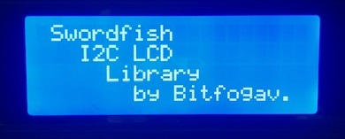
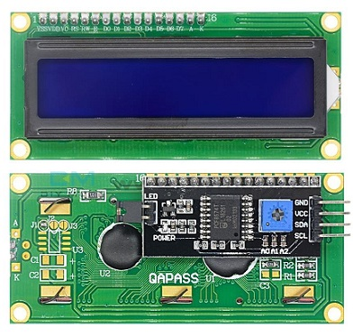

I²C LCD Library.
A Swordfish BASIC module I developed to drive HD44780-compatible character LCDs through the PCF8574 I²C I/O expander. The aim was simple: make an I²C-connected LCD feel as straightforward to use as the original Swordfish LCD library, without consuming a collection of PIC I/O pins.
VIEW ORIGINAL ARTICLE & LIBRARY ↗The Hardware in Action
Two photographs from the original project: the library driving a blue-backlit character display, and the LCD hardware with its I²C interface board.


Why I Built It
Parallel character LCDs are useful, but wiring several data and control signals to a microcontroller takes up pins. A PCF8574 adapter lets the LCD communicate over I²C. I built I2CLCD.bas to wrap that interface in familiar Swordfish LCD commands, so existing projects could use a similar programming style.
Hardware or software I²C
Select the PIC's hardware I²C peripheral or use configurable software SDA and SCL pins.
2-line and 4-line displays
Designed for common HD44780-compatible character LCDs, including two- and four-line layouts.
Familiar LCD commands
Write text, position the cursor, clear the screen, shift the display and control the backlight.
Custom characters
Support for programmable character patterns, demonstrated with animated bar graphs.
A Look at the Code
The example below is taken from my original Swordfish Wiki article. It shows how a PIC18F2550 can use software I²C to write text at specific LCD positions.
' Using software I2C to control the I2CLCD display.
Device = 18F2550
Clock = 20
// optional configure SDA and SCL if using software I2C...
#option USE_SI2C = true
#option I2C_SDA = PORTA.4
#option I2C_SCL = PORTA.5
// import libraries...
Include "I2CLCD.bas"
' write string to display at locations...
I2CLCD.WriteAt(1,2,"Swordfish")
I2CLCD.WriteAt(2,4,"I2C LCD")
I2CLCD.WriteAt(3,6,"Library")
I2CLCD.WriteAt(4,8,"by Bitfogav.")The library also includes lower-level routines for sending LCD commands over the PCF8574, configurable I²C addressing, and a bar-graph example using custom LCD characters.
Read the Full Article & Get the Library
This page is a project showcase. For the complete original write-up, configuration instructions, sample programs and the I2CLCD v1.0 library download, visit my Swordfish Compiler Wiki article.
OPEN SWORDFISH WIKI ↗